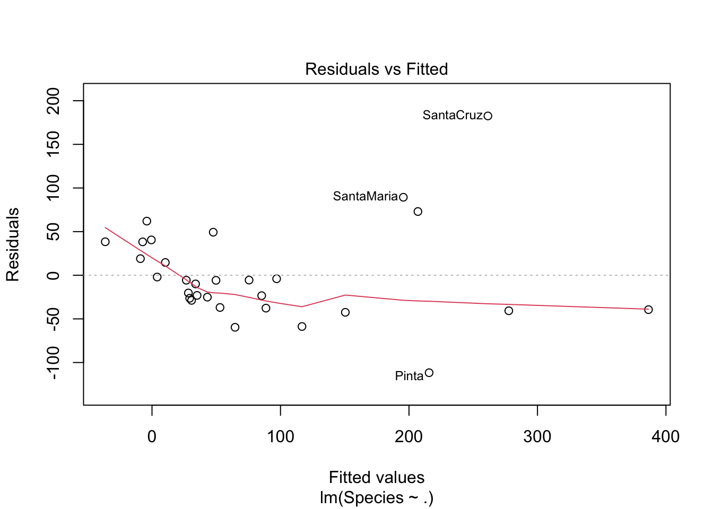
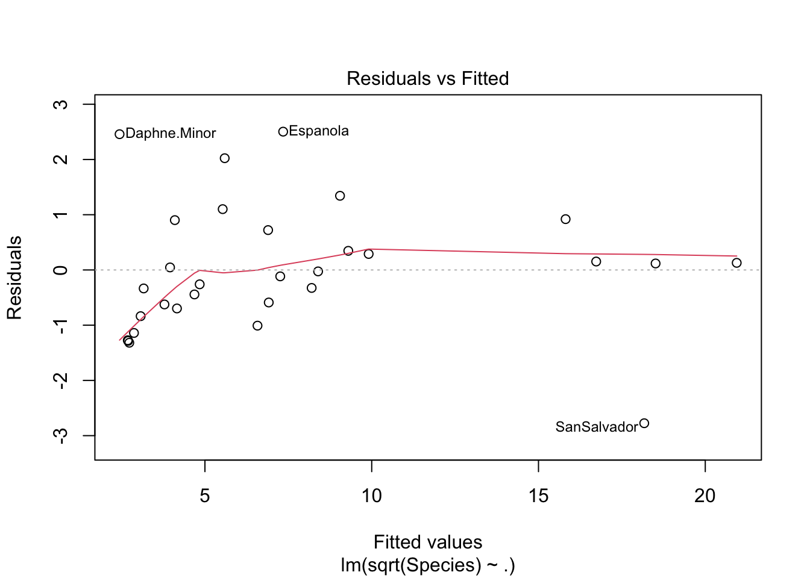
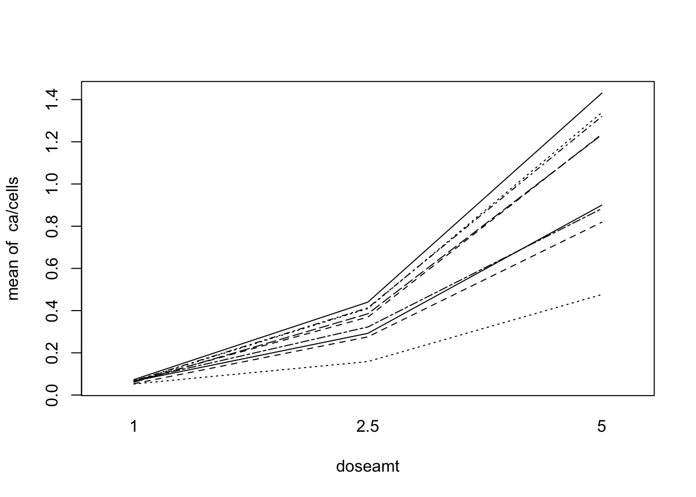
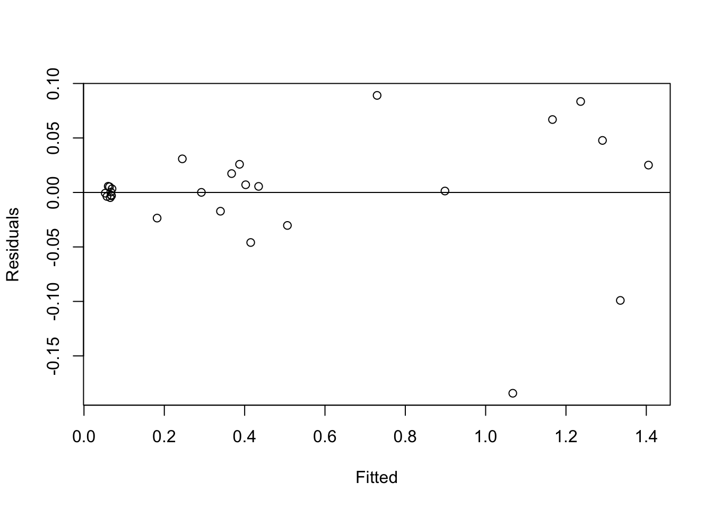
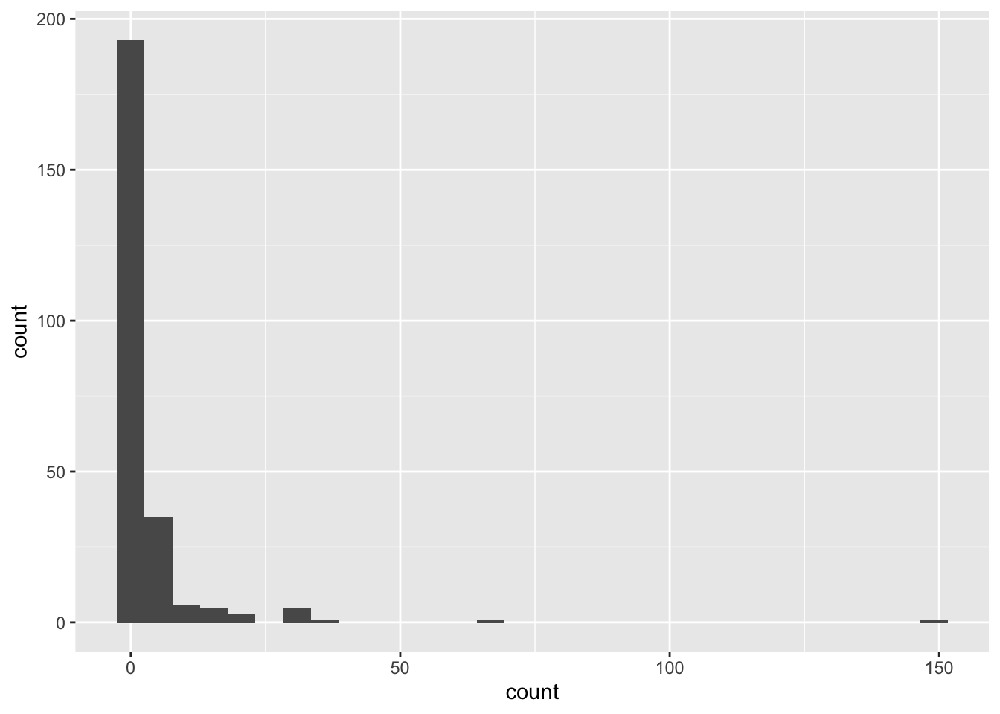
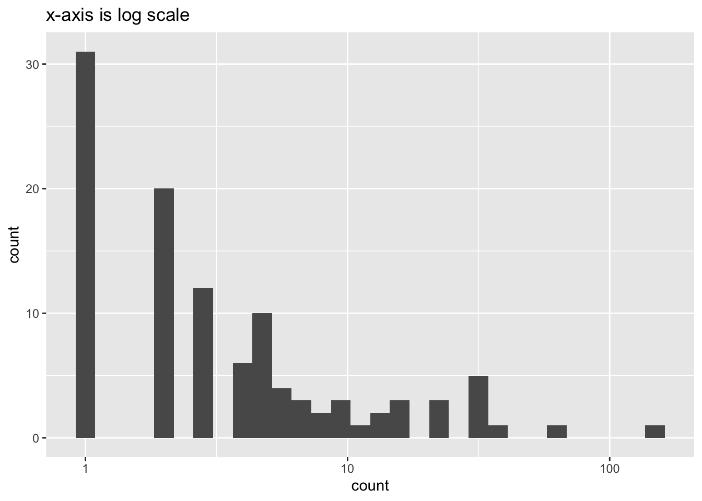

library(tidyverse)
library(ggplot2)
library(epiR)
library(faraway)
library(alr4)
library(MASS)
library(knitr)
library(kableExtra)
library(pscl)
library(here)6 포아송 회귀모형
6.1 필요한 패키지
6.2 포아송 분포
반응변수 \(y\)가 어떤 사건이 일어난 횟수(count)라면 주로 포아송분포를 확률 모형으로 사용한다.
\[ P(Y=y) = f(y|\mu)= \frac{ e^{-\mu} \mu^y }{y!}, \quad y=0,1,2,\dots \tag{6.1}\]
포아송 분포는 다음과 같은 중요한 특성을 가지고 있다.
만약에 어떤 사건이 일어난 횟수가 몇 가지 가능한 수들 중에 하나라면 (예: \(0 \le y \le M\)) 포아송분포를 이항분포의 근사(approximation)로 생각할 수 있다. 만약 \(n\)이크고 성공확률 \(p\)가 작으면 이항분포는 평균이 \(\mu=np\)인 포아송 분포와 매우 가깝기 때문에 가능한 횟수가 제한되었다 하더라도 포아송 분포를 적용할 수 있다.
사건의 일어난 횟수가 주어진 시간의 길이에 비례하고 다른 사건과 독립이면 포아송 분포를 따른다. 또한 포아송 분포는 두 개의 사건이 일어날 때 시간 간격이 지수분포(exponential distribution)을 따른다면 주어진 시간 간격동안 일어난 사건의 횟수는 포아송 분포를 따른다.
\(y_i\)가 서로 독립이고 평균이 \(\mu_i\)인 포아송분포를 따른다면 합 \(\sum_i y_i\)는 평균이 \(\sum_i \mu_i\)인 포아송분포를 따른다
6.3 포아송 회귀모형
이러한 포아송 분포에서 나온 반응변수(횟수 \(y\))에 대하여 설명변수 \(x\)의 영향에 대한 회귀분석을 포아송 회귀모형이라고 한다.
포아송 분포의 평균 \(\mu\)는 양의 실수이고 선형예측식 \(\eta= \pmb x^t \pmb \beta\)의 범위는 실수이기 때문에 로그함수를 연결함수(link function)으로 이용하여 회귀식을 세운다.
\[ \log E(y|\pmb x_i) =\log \mu(\pmb x_i) = \beta_0 + \beta_1 x_1 + \dots + \beta_p x_p \tag{6.2}\]
포아송 회귀모형에서 회귀 계수의 의미를 알아보기 위하여 다음과 같이 하나의 설명변수만 있으며 그 값이 \(x=0\) 과 \(x=1\) 인 경우에 회귀식을 보자.
\[ \log E(y| x = 1 ) = \log \mu( x = 1) = \beta_0 + \beta_1, \quad \log E(y| x = 2) = \log \mu( x = 2) = \beta_0 + 2\beta_1 \] 따라서 다음과 같은 식이 성립하므로 설명변수 \(x\) 가 1 단위 증가하면 반응변수의 평균은 \(\exp(\beta_1)\) 배 증가한다는 것을 알 수 있다.
\[ \frac{E(y| x = 2 )}{E(y| x = 1 )}= \frac{\mu( x = 2)} {\mu( x = 1)} = \frac{\exp(\beta_0 + 2\beta_1)}{\exp(\beta_0 + \beta_1) } = \exp(\beta_1) \]
사실 포아송 분포의 로그가능도함수에서 로그함수가 자연 연결함수임을 쉽게 알 수 있다. 즉, \(\pmb y=(y_1,y_2,\dots,y_n)^t\)를 서로 독립이고 평균이 \(\mu_i = \mu(\pmb x_i)\)인 포아송 확률변수라고 한다면 로그가능도함수는 다음과 같다.
\[ \begin{aligned} l &= \log \prod_{i=1}^n f(y_i|\mu_i) \\ &= \sum_{i=1}^n [y_i \log \mu_i - \mu_i - \log y_i!] \end{aligned} \tag{6.3}\]
위에서 볼수 있듯이 충분통계량 \(y_i\)에 대응하는 모수에 대한 항은 \(\log \mu_i\) 로서 이는 로그함수가 자연연결함수임을 나타낸다.
회귀계수 \(\pmb \beta\)의 추정은 로지스틱 회귀와 같이 최대가능도추정법(maximum likelihood estimation)으로 구한다. 포아송 회귀에서도 최대가능도추정량은 직접 계산으로 구할 수 없기 때문에 수치적인 방법을 이용하여 구한다.
또한 회귀계수에 대한 검정 \(H_0: \beta_i=0\)은 대표본이론에 의거한 정규근사를 이용한다. 즉 유의수준 \(\alpha\)에서 t-통계량 \(t=\hat \beta_i/se(\hat \beta_i)\)의 절대값 \(|t|\)가 \(z_\alpha\)보다 크면 귀무가설을 기각한다.
6.4 편차
포아송 회귀분석에서 편차(deviance) \(D\)를 구해보기 위하여 포화모형을 생각해보자.
각 관측값의 평균 \(\mu_i\)를 자신의 관측값 \(y_i\)로 추정하는 것이 포화모형이다. 따라서 포화모형의 로그가능도함수는 다음과 같이 주어지고
\[ l_{saturated} = \sum_{i=1}^n [y_i \log y_i - y_i - \log y_i!] \] 식 6.3 으로 주어진 포아송 회귀분석의 로그가능도함수를 빼주면 \(D\)를 얻을 수 있다.
\[ \begin{aligned} D & = 2 [ l_{saturated}(\hat {\pmb \mu} | y)-l_{regession}(\hat {\pmb \mu} | y) ] \\ & = 2 \sum_{i=1}^n [y_i \log y_i - y_i - \log y_i!] - \sum_{i=1}^n [y_i \log {\hat \mu}_i - {\hat \mu}_i - \log y_i!] \\ &= 2 \sum_{i=1}^n [ y_i \log (y_i / {\hat \mu}_i) - (y_i - {\hat \mu}_i) ] \end{aligned} \]
또한 모형의 적합성을 측정하는 양으로서 \(\chi^2\)-통계량을 사용할 수 있다.
\[ \chi^2 = \sum_{i=1}^n \frac{(y_i - \hat \mu_i)^2}{\hat \mu_i} \]
로지스틱 회귀에서와 비슷하게 포아송 회귀분석에서도 과포화(overdispersion)가 나타날 수 있다. 즉, 포아송 모형의 가정은 평균과 분산이 같은 것인데 (\(\mu_i=E(y_i)=Var(y_i)\)) 이러한 가정은 실제 자료 분석에서 많은 경우에 만족하지 않을 수 있으며 과포화가 나타난다
\[ E(y_i)= \mu_i, \quad \text{ but} \quad Var(y_i) > \mu_i \]
이렇게 과포화가 나타나는 경우에는 산포모수(dispersion parameter) \(\phi\)를 추정하여 회귀계수의 표준오차 계산에 반영해주어야 한다. 산포모수는 \(\chi^2\)통계량을 통하여 추정할 수 있다.
\[ \hat \phi = \frac { \chi^2}{n-p} \]
6.5 발생율 모형
어떤 사건이 일어날 횟수는 집단이나 시간의 크기(size)에 의존할 수 있다. 예를 들어 각 도시의 1년 범죄 발생 횟수는 그 도시의 인구수나 크기에 비례하게 된다.
이러한 모형은 이항분포를 이용하여 분석할 수 도 있지만 사건의 발생확률이 매우 작고 집단의 크기가 크면 포아송 근사를 통한 분석도 가능하다. 또한 어떤 경우에는 집단의 크기에 대한 정보가 부족할 수 있다.
이러한 비율에 대한 회귀모형을 발생율 모형(rate models) 로 부르며 식으로 나타내면 아래와 같고
\[ \log \frac {\text{ 발생횟수} } { \text{집단의 크기} } = \pmb x^t \pmb \beta \]
이는 다시 발생횟수에 대한 포아송 회귀모형의 형태로 나타내면 다음과 같이 쓸 수 있다.
\[ \log \text{ 발생횟수} = (1)(\log \text{집단의 크기}) + \pmb x^t \pmb \beta \]
따라서 발생횟수에 대한 포아송 회귀분석을 적합할 때 집단의 크기를 안다면 그 \(\log\) 변환값을 회귀식에 포함하여 적합할 수 있다. 위의 식에서 알 수 있듯이 크기의 \(\log\) 변환변수는 회귀계수를 강제로 1로 놓는 제약을 둘 수 있다. 이러한 변수를 오프셋 변수(offset variable)이라고 한다.
6.6 음이항 분포
베르누이 독립시행에서 \(k\)번째의 성공까지의 시행회수 \(z\)는 음이항 분포(negative bionomial)을 따른다. 음이항분포는 포아송 분포에서 모수가 감마를 따를 때 근사분포로 사용될 수 있다.
\[ P(z) = {{z-1}\choose {k-1}} p^k (1-p)^{z-k},\quad z=k,k+1,\dots \tag{6.4}\]
위의 분포에서 확률 변수와 모수를 다시 아래와 같이 정의하면
\[ y=z-k, \quad p= \frac{1}{1+\alpha} \]
\(y\)의 확률분포는 다음과 같고
\[ P(y) = {{y+k-1}\choose {k-1}} \frac{\alpha^y}{(1+\alpha)^{y+k}},\quad y=0,1,2,\dots \]
따라서 \(y\)의 평균과 분산은 다음과 같이 주어진다.
\[ E(y) = \mu =k\alpha, \quad Var(y) = k\alpha + k\alpha^2= \mu + \mu^2/k \]
또한 로그가능도함수는 다음과 같이 주어지고
\[ l= \sum_{i=1}^n \left ( y_i \log \frac{\alpha}{1+\alpha} -k \log (1+\alpha) + \sum_{j=0}^{y_i-1} \log (j+k) -\log y_i! \right ) \]
연결함수는 다음과 같다.
\[ \log \frac{\alpha}{1+\alpha} = \log \frac{\mu}{\mu+k} = \eta=\pmb x^t \pmb \beta \] 보통의 경우 \(k\)는 고정된 상수로 생각할 수도 있고 또는 모수로 보고 추정할 수 도 있다.
6.7 영과잉모형
어떤 사건의 발생횟수에 대한 자료를 수집할 떄 0이 비정상적으로 많이 나타나는 경우가 있다.
만약 발생횟수의 분포를 포아송분포(식 6.1)로 가정하면 0이 관측될 확률은 크지 않다.
\[ P(y=0) = e^{-\mu} \]
자료에서 0의 발생 빈도가 비정상적으로 많은 자료를 영과잉자료(zero inflated data)라고 하며 이러한 자료에 포아송 분포를 그대로 적용하면 회귀 계수의 추정량에 편이(bias)가 발생할 수 있으며 과포화(overdispersion)가 발생하는 등 여러 가지 문제가 생긴다.
발생횟수에 0이 많은 이유는 매우 다양하다. 0이 많이 발생하는 대표적인 이유를 살펴보자.
외부 요인에 의하여 사건의 발생이 제약을 받는 경우
발생은 했는데 관측이 안된 경우
원래 0이 많은 경우
이렇게 0 과잉 자료를 분석할 수 있는 대표적인 모형은 영과잉 포아송 모형(zero inflated poission model; ZIP)이다
확률변수 \(y_i\)를 사건의 발생 회수라고 하면 ZIP 모형에서 0이 관측될 확률을 다음과 같이 나타낼 수 있다.
\[ P(y=0) = P(\text{ False zeros }) + [1-P(\text{ False zeros })] P(\text{ count process gives a zero }) \]
즉 0이 관측될 확률은 잘못된 0이 관찰 될 확률과 원래 확률 과정에서 0이 관찰 될 확률의 조합(mixture)으로 나타난다. 이제 \(i\)번째 관측에서 잘못된 0이 관찰 될 확률을 \(\pi_i\)라 하면
\[ P(y_i=0) = \pi_i + (1-\pi_i) P(\text{ count process gives a zero }) \]
더 나아가 확률 과정이 평균이 \(\mu_i\)인 포아송 분포를 따른다고 가정하고
\[ \begin{aligned} P(y_i=0) & = \pi_i + (1-\pi_i) P(y_i=0 | \mu_i) = \pi _i+ (1-\pi_i) e^{-\mu_i} \\ P(y_i=k) & = P(y_i=k | \mu_i) = (1-\pi_i)\frac{ e^{-\mu_i} \mu_i^{y_k} }{y_k!}, \quad k=1,2,\cdots \end{aligned} \]
위의 분포에서 \(y\)의 평균과 분산을 구해보면 다음과 같이 주어진다.
\[ \begin{aligned} E(y_i) & = (1-\pi_i)\mu_i \\ Var(y_i) & = (1-\pi_i)\mu_i + (1-\pi_i)\pi_i \mu_i^2 \end{aligned} \]
위의 식에서 볼 수 있듯이 영과잉 포아송 모형은 과포화들 보인다
\[ Var(y_i) > E(y_i) \]
영과잉 포아송 모형에 대한 회귀분석은 다음 두 모형을 동시에 고려하는 모형이다.
- 잘못된 0이 관측될 확률 \(\pi_i\)에 대한 로지스틱 회귀모형
- 발생회수에 대한 포아송 회귀모형
\[ \begin{aligned} \log \frac{\pi_i} {1-\pi_i} & = {\pmb x}_b^t {\pmb \beta}_b \\ \log \mu_i & = {\pmb x}_p^t {\pmb \beta}_p \end{aligned} \]
6.8 예제
6.8.1 Galapagos 군도의 거북이
Galapagos 군도에 있는 30개의 섬에서 사는 거북이의 개체 수 Species 를 반응변수 \(y\)로하고 5개의 지리적 변수를 예측변수로 하는 Poisson 회귀식을 적합하려고 한다. 이 예제는 교재 Faraway (2016) 57페이지에 있는 예제이다.
데이터 gala 를 구성하는 변수들은 다음과 같다.
Species: the number of plant species found on the islandEndemics: the number of endemic species (아래 분석에서 제외)Area: the area of the island (km\(^2\))Elevation: the highest elevation of the island (m)Nearest: the distance from the nearest island (km)Scruz: the distance from Santa Cruz island (km)Adjacent: the area of the adjacent island (square km)
gala_2 <- gala[,-2]
head(gala_2) %>%
kbl() %>%
kable_styling( full_width = F)| Species | Area | Elevation | Nearest | Scruz | Adjacent | |
|---|---|---|---|---|---|---|
| Baltra | 58 | 25.09 | 346 | 0.6 | 0.6 | 1.84 |
| Bartolome | 31 | 1.24 | 109 | 0.6 | 26.3 | 572.33 |
| Caldwell | 3 | 0.21 | 114 | 2.8 | 58.7 | 0.78 |
| Champion | 25 | 0.10 | 46 | 1.9 | 47.4 | 0.18 |
| Coamano | 2 | 0.05 | 77 | 1.9 | 1.9 | 903.82 |
| Daphne.Major | 18 | 0.34 | 119 | 8.0 | 8.0 | 1.84 |
데이터를 일반적인 선형모형과 반응변수에 제곱근 변환을 적용한 결과는 다음과 같다.
modl <- lm(Species ~ . , gala_2)
plot(modl, 1)
summary(modl)
Call:
lm(formula = Species ~ ., data = gala_2)
Residuals:
Min 1Q Median 3Q Max
-111.679 -34.898 -7.862 33.460 182.584
Coefficients:
Estimate Std. Error t value Pr(>|t|)
(Intercept) 7.068221 19.154198 0.369 0.715351
Area -0.023938 0.022422 -1.068 0.296318
Elevation 0.319465 0.053663 5.953 3.82e-06 ***
Nearest 0.009144 1.054136 0.009 0.993151
Scruz -0.240524 0.215402 -1.117 0.275208
Adjacent -0.074805 0.017700 -4.226 0.000297 ***
---
Signif. codes: 0 '***' 0.001 '**' 0.01 '*' 0.05 '.' 0.1 ' ' 1
Residual standard error: 60.98 on 24 degrees of freedom
Multiple R-squared: 0.7658, Adjusted R-squared: 0.7171
F-statistic: 15.7 on 5 and 24 DF, p-value: 6.838e-07modt <- lm(sqrt(Species) ~ . , gala)
plot(modt, 1)
summary(modt)
Call:
lm(formula = sqrt(Species) ~ ., data = gala)
Residuals:
Min 1Q Median 3Q Max
-2.77512 -0.67895 -0.07101 0.62771 2.50402
Coefficients:
Estimate Std. Error t value Pr(>|t|)
(Intercept) 2.3705693 0.4253328 5.573 1.14e-05 ***
Endemics 0.2002788 0.0217192 9.221 3.45e-09 ***
Area -0.0002763 0.0005147 -0.537 0.597
Elevation -0.0002509 0.0021483 -0.117 0.908
Nearest 0.0198908 0.0226069 0.880 0.388
Scruz -0.0021423 0.0047791 -0.448 0.658
Adjacent 0.0001255 0.0005361 0.234 0.817
---
Signif. codes: 0 '***' 0.001 '**' 0.01 '*' 0.05 '.' 0.1 ' ' 1
Residual standard error: 1.307 on 23 degrees of freedom
Multiple R-squared: 0.9537, Adjusted R-squared: 0.9417
F-statistic: 79.03 on 6 and 23 DF, p-value: 3.457e-14포아송 회귀모형을 적합한 결과는 다음과 같다.
modp <- glm(Species ~ .,family=poisson, gala_2)
summary(modp)
Call:
glm(formula = Species ~ ., family = poisson, data = gala_2)
Coefficients:
Estimate Std. Error z value Pr(>|z|)
(Intercept) 3.155e+00 5.175e-02 60.963 < 2e-16 ***
Area -5.799e-04 2.627e-05 -22.074 < 2e-16 ***
Elevation 3.541e-03 8.741e-05 40.507 < 2e-16 ***
Nearest 8.826e-03 1.821e-03 4.846 1.26e-06 ***
Scruz -5.709e-03 6.256e-04 -9.126 < 2e-16 ***
Adjacent -6.630e-04 2.933e-05 -22.608 < 2e-16 ***
---
Signif. codes: 0 '***' 0.001 '**' 0.01 '*' 0.05 '.' 0.1 ' ' 1
(Dispersion parameter for poisson family taken to be 1)
Null deviance: 3510.73 on 29 degrees of freedom
Residual deviance: 716.85 on 24 degrees of freedom
AIC: 889.68
Number of Fisher Scoring iterations: 56.8.2 세포의 비정상성
세포(cells)에 감마 방사능을 쏘였을 떄 비정상성(ca)를 나타내는 횟수에 대하여 발생율 모형을 적합시켰다. 예측변수는 방사능의 양(doseamt)와 비율(doserate)이다. 여기서 세포의 수(cells)를 오프셋 변수(offset variable)로 사용한다. 이 예제는 교재 Faraway (2016) 61페이지에 있는 예제이다.
cells: Number of cells in hundredsca: Number of chromosomal abnormalitiesdoseamt: amount of dose in Graysdoserate: rate of dose in Grays/hour
head(dicentric) %>%
kbl() %>%
kable_styling( full_width = F)| cells | ca | doseamt | doserate |
|---|---|---|---|
| 478 | 25 | 1 | 0.10 |
| 1907 | 102 | 1 | 0.25 |
| 2258 | 149 | 1 | 0.50 |
| 2329 | 160 | 1 | 1.00 |
| 1238 | 75 | 1 | 1.50 |
| 1491 | 100 | 1 | 2.00 |
다음 표는 방사능의 양(doseamt)와 비율(doserate)의 조합에 따라 비정상 세포의 비율을 나타낸다.
round(xtabs(ca/cells ~ doseamt+doserate, dicentric),2) doserate
doseamt 0.1 0.25 0.5 1 1.5 2 2.5 3 4
1 0.05 0.05 0.07 0.07 0.06 0.07 0.07 0.07 0.07
2.5 0.16 0.28 0.29 0.32 0.38 0.41 0.41 0.37 0.44
5 0.48 0.82 0.90 0.88 1.23 1.32 1.34 1.24 1.43with(dicentric,interaction.plot(doseamt, doserate, ca/cells, legend= FALSE))
먼저 일반적인 선형모형을 적용하고 잔차분석을 수행하자.
lmod <- lm(ca/cells ~ log(doserate)*factor(doseamt), dicentric)
summary(lmod)
Call:
lm(formula = ca/cells ~ log(doserate) * factor(doseamt), data = dicentric)
Residuals:
Min 1Q Median 3Q Max
-0.184275 -0.004212 0.001314 0.021208 0.089076
Coefficients:
Estimate Std. Error t value Pr(>|t|)
(Intercept) 0.063489 0.019528 3.251 0.00382 **
log(doserate) 0.004573 0.016692 0.274 0.78680
factor(doseamt)2.5 0.276315 0.027616 10.005 1.92e-09 ***
factor(doseamt)5 1.004119 0.027616 36.359 < 2e-16 ***
log(doserate):factor(doseamt)2.5 0.063933 0.023606 2.708 0.01317 *
log(doserate):factor(doseamt)5 0.239129 0.023606 10.130 1.54e-09 ***
---
Signif. codes: 0 '***' 0.001 '**' 0.01 '*' 0.05 '.' 0.1 ' ' 1
Residual standard error: 0.05858 on 21 degrees of freedom
Multiple R-squared: 0.9874, Adjusted R-squared: 0.9844
F-statistic: 330 on 5 and 21 DF, p-value: < 2.2e-16plot(residuals(lmod) ~ fitted(lmod),xlab="Fitted",ylab="Residuals")
abline(h=0)
위의 잔차분석에서는 등분산성이 의심되는 결과가 나타난다.
이제 doseamt 를 범주형 자료로 만들고 세포의 갯수(cells) 를 다음과 같이 log 변환하여 독립변수에 포함시키자. 이제 반응변수는 비정상 세포의 비율이 아니라 비정상 세포의 갯수이다.
dicentric_1 <- dicentric
dicentric_1$dosef <- factor(dicentric_1$doseamt)
pmod <- glm(ca ~ log(cells)+log(doserate)*dosef, family=poisson, dicentric_1)
summary(pmod)
Call:
glm(formula = ca ~ log(cells) + log(doserate) * dosef, family = poisson,
data = dicentric_1)
Coefficients:
Estimate Std. Error z value Pr(>|z|)
(Intercept) -2.76534 0.38116 -7.255 4.02e-13 ***
log(cells) 1.00252 0.05137 19.517 < 2e-16 ***
log(doserate) 0.07200 0.03547 2.030 0.042403 *
dosef2.5 1.62984 0.10273 15.866 < 2e-16 ***
dosef5 2.76673 0.12287 22.517 < 2e-16 ***
log(doserate):dosef2.5 0.16111 0.04837 3.331 0.000866 ***
log(doserate):dosef5 0.19316 0.04299 4.493 7.03e-06 ***
---
Signif. codes: 0 '***' 0.001 '**' 0.01 '*' 0.05 '.' 0.1 ' ' 1
(Dispersion parameter for poisson family taken to be 1)
Null deviance: 916.127 on 26 degrees of freedom
Residual deviance: 21.748 on 20 degrees of freedom
AIC: 211.15
Number of Fisher Scoring iterations: 4이제 다음과 같은 관계에 따라서 세포의 갯수(cells)를 오프셋 변수로 다시 적합시켜보자.
\[ \log (\text{ca}/ \text{cell}) = {\pmb x}^t {\pmb \beta} \Leftarrow \log (\text{ca} ) = \log(\text{cell}) + {\pmb x}^t {\pmb \beta} \]
rmod <- glm(ca ~ offset(log(cells))+log(doserate)*dosef, family= poisson, dicentric_1)
summary(rmod)
Call:
glm(formula = ca ~ offset(log(cells)) + log(doserate) * dosef,
family = poisson, data = dicentric_1)
Coefficients:
Estimate Std. Error z value Pr(>|z|)
(Intercept) -2.74671 0.03426 -80.165 < 2e-16 ***
log(doserate) 0.07178 0.03518 2.041 0.041299 *
dosef2.5 1.62542 0.04946 32.863 < 2e-16 ***
dosef5 2.76109 0.04349 63.491 < 2e-16 ***
log(doserate):dosef2.5 0.16122 0.04830 3.338 0.000844 ***
log(doserate):dosef5 0.19350 0.04243 4.561 5.1e-06 ***
---
Signif. codes: 0 '***' 0.001 '**' 0.01 '*' 0.05 '.' 0.1 ' ' 1
(Dispersion parameter for poisson family taken to be 1)
Null deviance: 4753.00 on 26 degrees of freedom
Residual deviance: 21.75 on 21 degrees of freedom
AIC: 209.16
Number of Fisher Scoring iterations: 46.8.3 국립공원 방문자
국립공원에서 일하는 야생동물 연구원은 공원방문자들이 얼마나 많은 수의 고기(fish)를 잡는지 알고 싶어한다.공원방문자는 공원을 떠날 때 다음과 같은 설문들에 대하여 답하였다. 총 250명의 방문자(group)가 설문에 응답하였다. 이 예제는 교재 Faraway (2016) 94페이지에 있는 예제이다.
- 며칠동안 공원에 머물렀는가?
- 같이 공원에 온 사람들은 총 몇 명인가? (
persons) - 같이 공원에 온 사람들 중에 어린이는 몇 명인가? (
child) - 공원 방문중에 낚시를 하였는가?
- 낚시를 하였다면 고기를 몇 마리 잡았는가? (
count) - 공원을 방문할 떄 캠핑카를 가지고 왔는가? (
camper)
공원에 방문한 사람들 중에 낚시를 하지 않은 사람들이 많기 때문에 많은 수의 그룹이 잡은 고기의 수가 0이다.
위의 자료를 영과잉모형으로 분석하기 위하여 다음과 같이 자료를 부르고 히스토그램을 그려보자.
zinb<-read.csv(here::here("data/fish.csv"))
head(zinb) %>%
kbl() %>%
kable_styling( full_width = F)| nofish | livebait | camper | persons | child | xb | zg | count |
|---|---|---|---|---|---|---|---|
| 1 | 0 | 0 | 1 | 0 | -0.8963146 | 3.0504048 | 0 |
| 0 | 1 | 1 | 1 | 0 | -0.5583450 | 1.7461489 | 0 |
| 0 | 1 | 0 | 1 | 0 | -0.4017310 | 0.2799389 | 0 |
| 0 | 1 | 1 | 2 | 1 | -0.9562981 | -0.6015257 | 0 |
| 0 | 1 | 0 | 1 | 0 | 0.4368910 | 0.5277091 | 1 |
| 0 | 1 | 1 | 4 | 2 | 1.3944855 | -0.7075348 | 0 |
zinb_1 <- within(zinb, {
nofish <- factor(nofish)
livebait <- factor(livebait)
camper <- factor(camper)
})
summary(zinb_1) nofish livebait camper persons child xb
0:176 0: 34 0:103 Min. :1.000 Min. :0.000 Min. :-3.275050
1: 74 1:216 1:147 1st Qu.:2.000 1st Qu.:0.000 1st Qu.: 0.008267
Median :2.000 Median :0.000 Median : 0.954550
Mean :2.528 Mean :0.684 Mean : 0.973796
3rd Qu.:4.000 3rd Qu.:1.000 3rd Qu.: 1.963855
Max. :4.000 Max. :3.000 Max. : 5.352674
zg count
Min. :-5.6259 Min. : 0.000
1st Qu.:-1.2527 1st Qu.: 0.000
Median : 0.6051 Median : 0.000
Mean : 0.2523 Mean : 3.296
3rd Qu.: 1.9932 3rd Qu.: 2.000
Max. : 4.2632 Max. :149.000 ggplot(zinb_1, aes(count)) + geom_histogram() `stat_bin()` using `bins = 30`. Pick better value with `binwidth`.
ggplot(zinb, aes(count)) + geom_histogram() + scale_x_log10() +ggtitle("x-axis is log scale")Warning: Transformation introduced infinite values in continuous x-axis`stat_bin()` using `bins = 30`. Pick better value with `binwidth`.Warning: Removed 142 rows containing non-finite values (`stat_bin()`).
다음은 영과잉 포아송모형을 적합한 결과이다. 0에 대한 로지스틱 회귀에서 사용하는 독립변수는 persons이다.
zip1 <- pscl::zeroinfl(count ~ child + camper | persons, data = zinb_1)
summary(zip1)
Call:
pscl::zeroinfl(formula = count ~ child + camper | persons, data = zinb_1)
Pearson residuals:
Min 1Q Median 3Q Max
-1.2369 -0.7540 -0.6080 -0.1921 24.0847
Count model coefficients (poisson with log link):
Estimate Std. Error z value Pr(>|z|)
(Intercept) 1.59789 0.08554 18.680 <2e-16 ***
child -1.04284 0.09999 -10.430 <2e-16 ***
camper1 0.83402 0.09363 8.908 <2e-16 ***
Zero-inflation model coefficients (binomial with logit link):
Estimate Std. Error z value Pr(>|z|)
(Intercept) 1.2974 0.3739 3.470 0.000520 ***
persons -0.5643 0.1630 -3.463 0.000534 ***
---
Signif. codes: 0 '***' 0.001 '**' 0.01 '*' 0.05 '.' 0.1 ' ' 1
Number of iterations in BFGS optimization: 10
Log-likelihood: -1032 on 5 Df다음은 일반적인 포아송모형을 적합한 결과이다.
pois1 <- glm(count ~ child + camper, family = poisson, data = zinb_1)
summary(pois1)
Call:
glm(formula = count ~ child + camper, family = poisson, data = zinb_1)
Coefficients:
Estimate Std. Error z value Pr(>|z|)
(Intercept) 0.91026 0.08119 11.21 <2e-16 ***
child -1.23476 0.08029 -15.38 <2e-16 ***
camper1 1.05267 0.08871 11.87 <2e-16 ***
---
Signif. codes: 0 '***' 0.001 '**' 0.01 '*' 0.05 '.' 0.1 ' ' 1
(Dispersion parameter for poisson family taken to be 1)
Null deviance: 2958.4 on 249 degrees of freedom
Residual deviance: 2380.1 on 247 degrees of freedom
AIC: 2723.2
Number of Fisher Scoring iterations: 6영과잉 모형과 일반적인 포아송 모형의 적합도를 비교하는 가설검정은 Vuong test 를 이용하여 다음과 같이 수행할 수 있다. 아래에서 p-값이 매우 작은 것은 영과잉 모형이 더 적절함을 나타낸다.
pscl::vuong(pois1, zip1)Vuong Non-Nested Hypothesis Test-Statistic:
(test-statistic is asymptotically distributed N(0,1) under the
null that the models are indistinguishible)
-------------------------------------------------------------
Vuong z-statistic H_A p-value
Raw -3.574259 model2 > model1 0.00017561
AIC-corrected -3.552397 model2 > model1 0.00019087
BIC-corrected -3.513904 model2 > model1 0.00022079